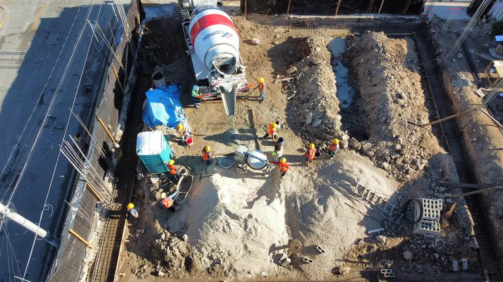

Every airport is surrounded by invisible obstacle limitation surfaces: sloping and horizontal planes that no building, antenna or crane may penetrate without an aeronautical review. In Mexico the authority is the Agencia Federal de Aviación Civil (AFAC), working with the airport operator. Near Cancún, Tulum, Cozumel and Chetumal this can decide how many floors your project gets.

Distance and bearing from the runway ends and centreline.
Ground level plus the surface height at the lot.
Rooftop equipment and telecom masts count too.
Tower cranes during construction may need their own review.
Marking and lighting when the building is near a surface.
The municipal plan’s own height limits, which often bind first.
Around each runway there is an inner horizontal surface, a conical surface rising from it, and approach and take-off surfaces sloping up from each runway end along the centreline. A lot under the approach path a few kilometres out may allow far less height than a lot the same distance to the side. The surfaces follow international standards adopted by Mexico; the exact numbers for each airport come from its own aerodrome data.
Before the design is frozen, and before buying a lot for a tall project. If the height is not allowed, the fix is fewer floors, a different position on the lot or a different lot, and all three are cheaper on paper than after the structure is designed. During construction, plan the crane height and its lighting with the same review.
In practice the municipal urban development plans in Cancún and Tulum already limit heights in most areas; the aeronautical limit matters for taller projects close to the airports and for masts and cranes. We check both.
| Project | Near the airport | Usual outcome |
|---|---|---|
| 1–2 storey house or warehouse | Away from the approach path | Usually not affected |
| Hotel or apartment tower | Near the approach or take-off path | Height review before design |
| Telecom mast or rooftop antenna | Any location near the airport | Check the total height |
| Tower crane | Near the approach path | Plan height and lighting with the review |
See also: Construction permits in Cancún · Hotel permits in Quintana Roo
Airport cluster: Construction near the airports · Park & fly parking lots · Airport hotels · Airport logistics warehouses · Rental apartments near the airport · Gas stations near the airport · Private aviation hangars · Car-rental facilities · Building near Tulum airport
Send the lot and the idea; we check land use, height and access, and send a budget range. Reply in 2 minutes.
Quote on WhatsAppFideicomiso: how foreigners own coastal property · Buying land in Mexico: due diligence · Concierge construction service · Managing a build from abroad · Build or buy in Playa del Carmen? · How long a build takes in Mexico · Contractor stopped? Finishing a stalled build · Closing on property: process and costs · Where to build: area by area · Cost to build a house in Mexico · Land use, COS and CUS · Soils studies on limestone
Your review helps other owners decide, and helps us improve.
Write a reviewRead our Google reviews